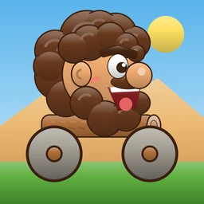
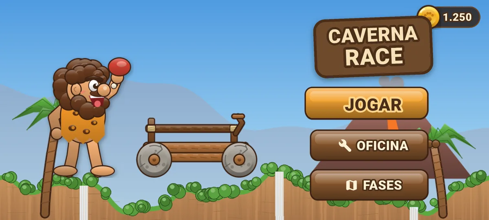
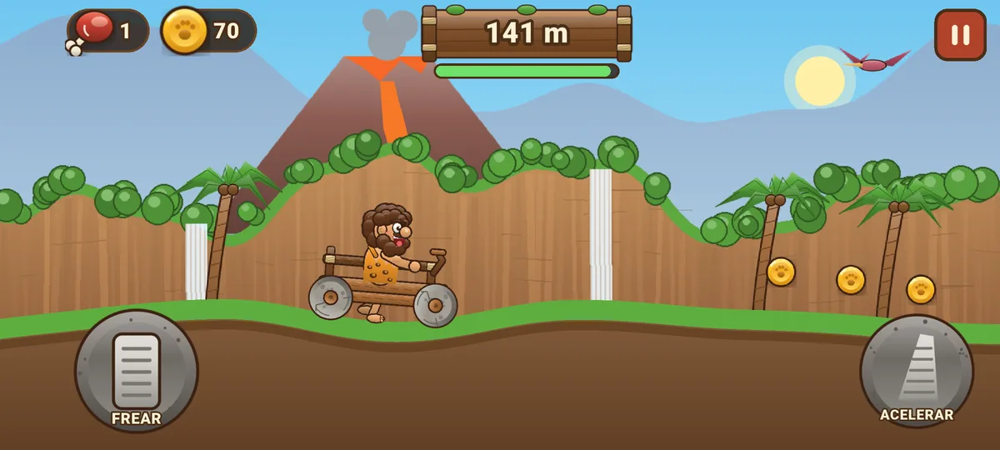
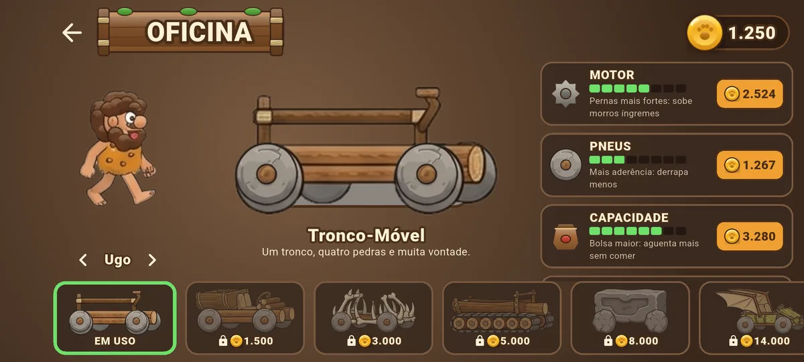
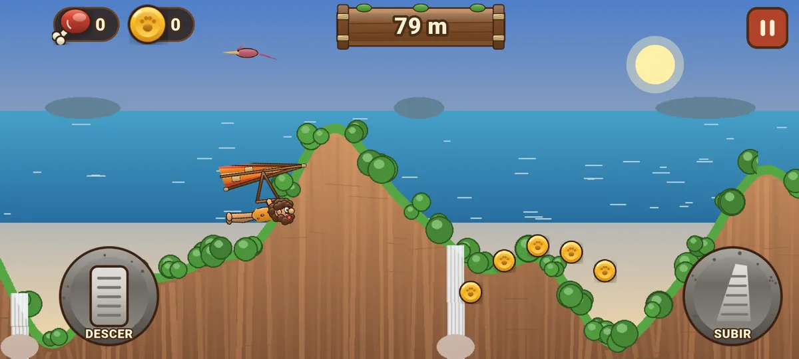
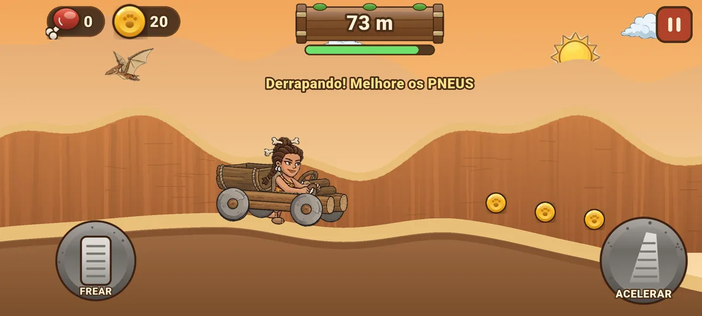
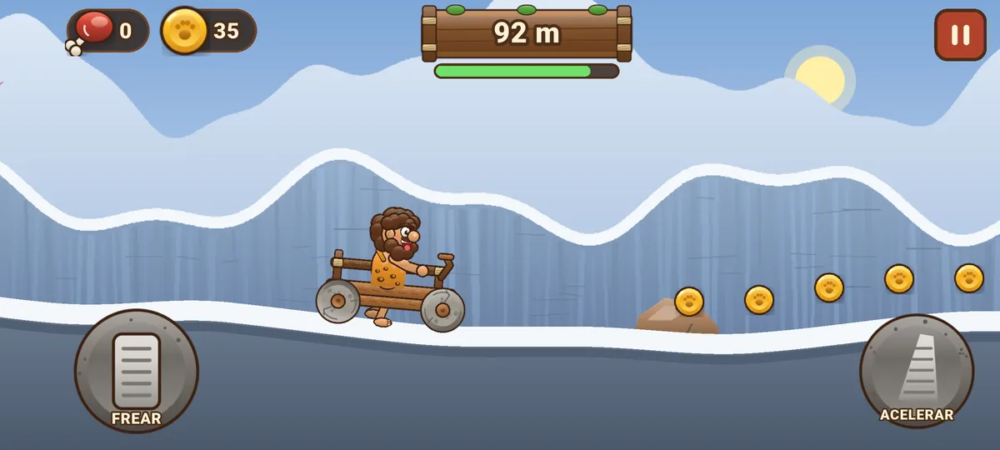
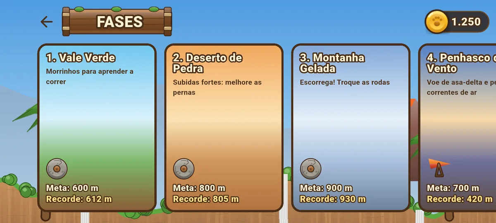

Corrida pré-histórica
Um homem das cavernas, um carrinho de troncos com rodas de pedra e morros cada vez mais altos. Até onde você chega?
O Caverna Race é um jogo de corrida 2D, jogado com o celular deitado. O carrinho vai andando na horizontal e você controla só o acelerador e o freio. Pelo caminho aparecem subidas fortes, trechos escorregadios e a fome apertando. Quando o carrinho não aguenta mais, é hora de voltar à oficina, melhorar o motor, os pneus ou a capacidade e tentar chegar mais longe.
Ao bater a meta de cada fase, a próxima é liberada, com outro cenário e outros desafios — inclusive uma fase em que o homem das cavernas voa de asa-delta.
Corrida na horizontal
O carrinho anda sozinho: você só acelera e freia para vencer os morros sem capotar.
Motor de pernas
Nada de motor: o homem das cavernas corre com os próprios pés, por um buraco no chão do carrinho.
Coxa de carne é combustível
A fome vai apertando. Pegue coxas de carne pelo caminho para continuar correndo.
Oficina
Gaste as moedas melhorando motor (subidas), pneus (aderência), capacidade (fôlego) e estabilidade.
Carrinhos e personagens
Seis carrinhos — Tronco-Móvel, Caçamba, Ossos, Esteira, Pedra e Voo-Móvel com asas de pterodáctilo — e três pilotos: Ugo, Kina e Hugo.
Cinco fases
Vale Verde, Deserto de Pedra, Montanha Gelada, Penhasco do Vento e Vulcão Fumegante.
Voo de asa-delta
Na fase do penhasco, voe numa asa-delta de couro e bambu e pegue as correntes de ar quente.
Sem cadastro
Sem conta e sem internet: o progresso fica só no seu aparelho.






